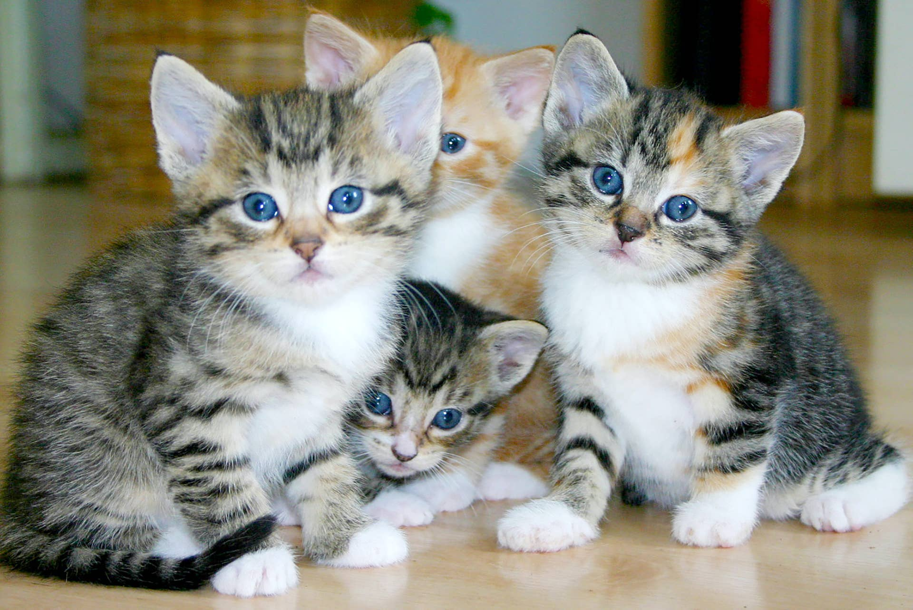
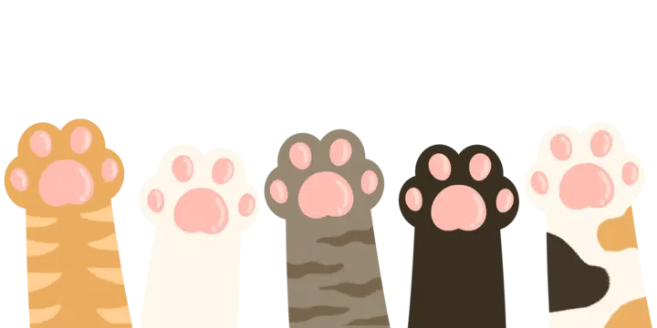

Created By: Aneesa Serrato | GRC 365 1003

Caring for a kitten is an exciting and rewarding experience, but it also comes with a lot of responsibility. Kittens are curious, energetic, and still learning about the world around them, which means they depend heavily on their owners for safety and guidance. A kitten needs more than just food and water to grow into a healthy adult cat. Providing a comfortable home, proper nutrition, regular veterinary care, exercise, and plenty of attention are all important parts of kitten care. It is also important to be patient because kittens may scratch furniture, knock things over, or get into places where they do not belong while they explore their surroundings.
Proper nutrition and a safe environment are especially important while a kitten is growing. Kittens should be given food specifically made for their age because it provides the protein, calories, vitamins, and minerals needed for healthy development. Fresh water should always be available, and their bowls should be cleaned regularly. Because kittens are naturally curious, owners should also remove potential dangers from areas they can reach. Electrical cords, toxic plants, medications, cleaning products, and small objects that could be swallowed should be kept safely away. A clean litter box and comfortable sleeping area should also be provided.
Playtime and affection are also important parts of raising a healthy kitten. Toys such as balls, toy mice, and wand toys encourage exercise and allow kittens to practice natural behaviors like chasing and pouncing. Playing together can also strengthen the bond between a kitten and its owner. With proper care, patience, and affection, kittens can grow into healthy, confident, and loving adult cats.
Finally, kittens should receive regular veterinary care. A veterinarian can provide vaccinations, check their development, discuss parasite prevention, and identify possible health problems. With patience, attention, and proper care, a kitten can grow into a healthy and happy companion.
Email: Serraa11@unlv.nevada.edu | Phone#: (777) 777-7777
